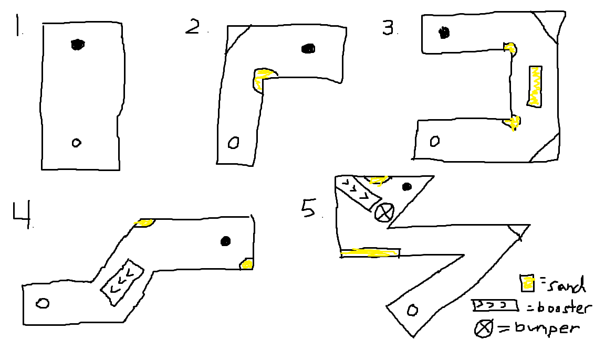
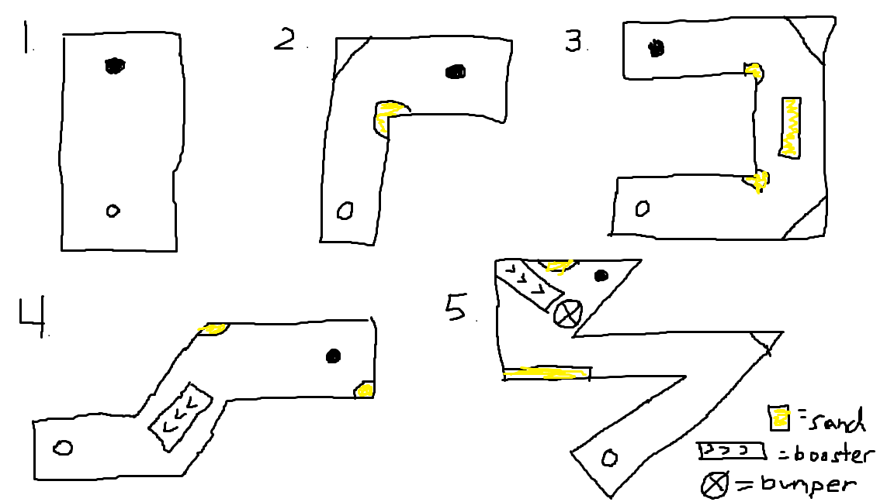

The plan is to create at least 5 levels of mini-golf in increasing difficulty. Rules are the same as mini-golf and players aim to get the levels completed in the least amount of shots. If there is enough time, I plan to add things like boosters or bumpers to make the game more interesting.
Sports and Puzzle
Desktop web
There is no story. Just a casual mini-golf game.
A top-down, colorful, and simple design. I want it to feel like the old mini-golf flash games.
The player will use the controls below and they will learn how to play throughout the levels. The levels get increasingly harder so the players will learn as they go.
Desktop web
 

My name is Ben Nagel and I am a 19 year old Game Design and Development Major at RIT